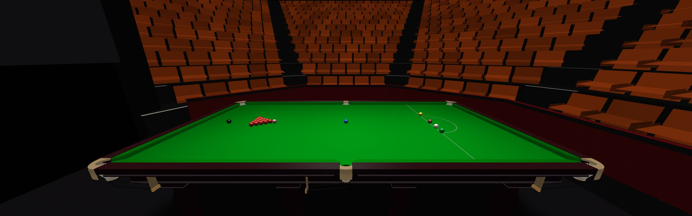
CueVR puts a full-size table in the room you are standing in. There is no shot meter and no aiming line: you hold a cue in both hands and play the shot.
You need a Quest 3 or 3S. You also need enough clear floor to walk along one side of a table. The game runs in passthrough, so you will see your own room around the table and can walk around your own furniture.
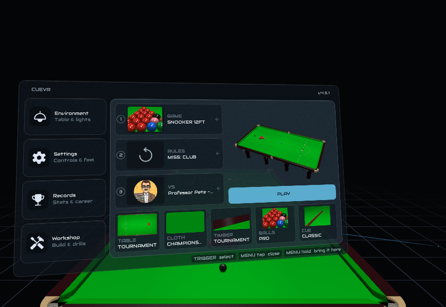
Where the table sits and how high it stands is the first thing to set.
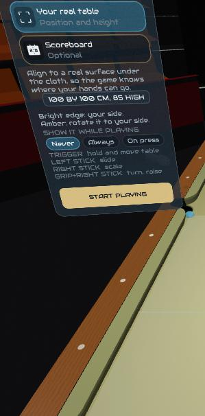
| Control | What it does |
|---|---|
| Left stick | Slides the table around the room. |
| Right stick, left and right | Turns the table. |
| Right stick, up and down | Raises and lowers the table. This is the only thing that needs this screen — sliding and turning work anywhere. |
| X | Picks up the scoreboard, so you can pin it somewhere real. See below. |
| A | Finished. Saves the position. |
A real snooker table has its bed about 85 cm off the floor, which is where the screen starts. You do not need a room big enough for the whole table. If space is tight, bring the part of the table you need into the space you have — the left stick slides it and the right stick turns it, at any time, and you can keep doing that as the frame goes on.
The table stays where you put it between sessions. You do not have to come back to this screen to move it, though: the sticks slide and turn the table whenever you are at it, including in the middle of a frame. The one thing only this screen can change is the height — to get back to it, press MENU and choose PLACE TABLE.
The scoreboard normally hangs above the far end of the table and moves with it. If you would rather it lived somewhere real — a wall, or a television that is switched off — press X on this screen and the board comes away with you. Carry it to where you want it and press A to pin it. It stays there between sessions, exactly as the table does, until B puts it back to automatic.
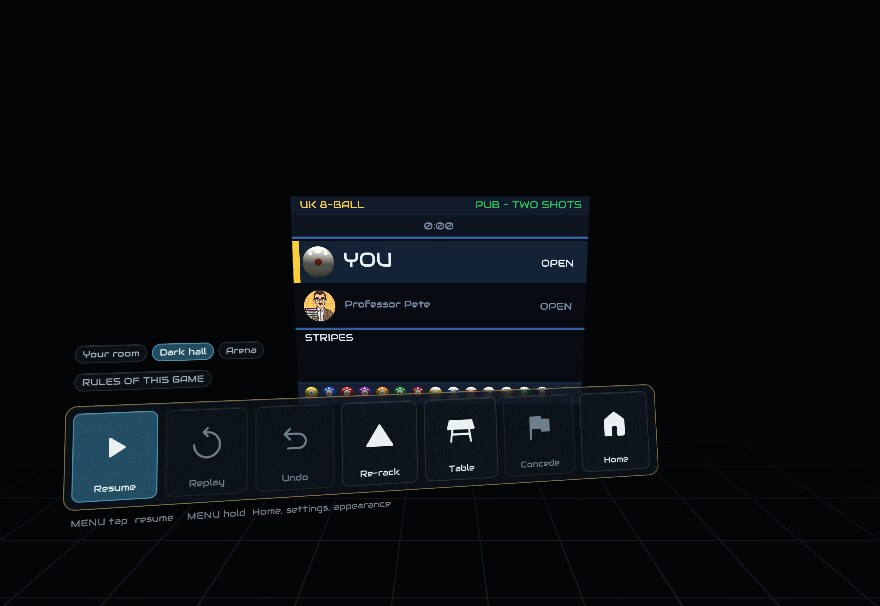
Both controllers hold the cue. The buttons do a small number of jobs, and the two side triggers are the ones worth learning.
The cue lies between your two controllers, so both hands aim it together: the line of the shot is the line between them. One hand is your bridge hand, where the front of the cue rests. The other is your butt hand, which holds the end and plays the stroke. Which physical controller is which depends on the handedness setting, so everything below is written in terms of the two hands rather than left and right.
| Control | What it does |
|---|---|
| Bridge hand | Sets your bridge position — where the front of the cue rests. |
| Butt hand | Holds the butt of the cue. Moving it forward is the stroke. |
| Butt hand trigger | Takes the shot. Pull it to commit — that locks the line the cue will travel along, so your aim cannot drift while you deliver. Keep it held and move the hand forward through the ball. Release when the shot is played. |
| Butt hand side trigger (hold) | Slides the cue through your bridge, so more or less of it sticks out in front. This is how you shorten up for a shot against a cushion. Your aim stays where it is. |
| Bridge hand side trigger (hold) | Sets where the cue sits relative to your controller, so the bridge falls in a position that is comfortable for you. Hold it and move the hand; the cue stays put and the offset changes. |
| Bridge hand side trigger (double tap) | Puts that offset back to the default. RESET CUE on the controls screen does the same thing. |
| RULES (main menu) | Which rule book the frame is played to. UK 8-ball offers PUB (2 SHOTS), INTERNATIONAL, ULTIMATE POOL, BLACKBALL (WPA) and KILLER, and US and Chinese 8-ball offer KILLER too. The snooker games choose how strictly a miss is judged, with SHOOTOUT as the fourth stop. Straight pool and 10-ball choose whether pockets have to be called, and carom chooses which of its four games you play. Everything else shows STANDARD. |
| X (hold) | Swaps the scoreboard for a live photograph of the table from above, for as long as you hold it — the quickest way to read a position without walking round. |
| Left stick | Slides the table around the room. Works at any time, including mid-frame, on either hand. |
| Right stick | Turns the table. Also at any time. Between the two sticks you can bring any shot in front of you without walking. |
| Trigger (in menus) | Selects the row or item you are pointing at. |
| A and B | Confirm and go back. |
| MENU | Pauses the game. |
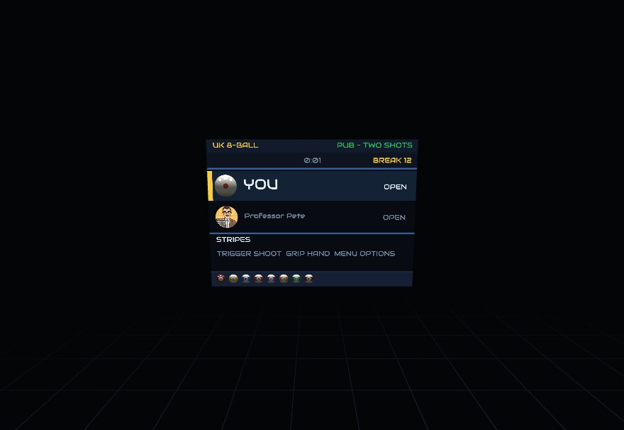
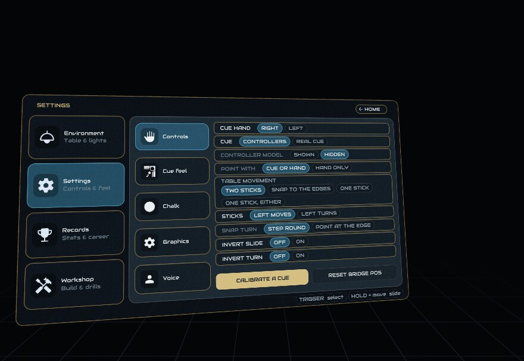
The cue is a real object lying between your two controllers. The line between your hands is the line of the shot, and how fast you move the butt hand is how hard the ball is hit.
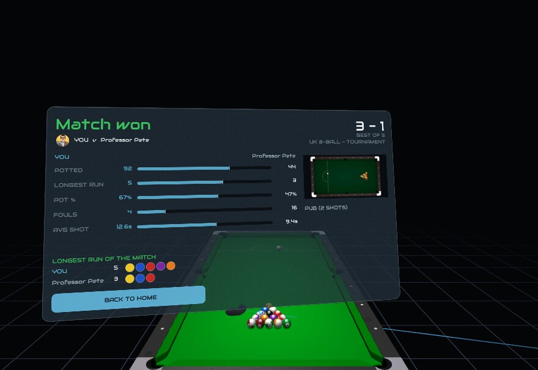
Bring the shot to you. The sticks move the table at any time, in the middle of a frame included: the left stick slides it, the right stick turns it. Nothing needs to be opened first and nothing is interrupted. For a shot tight against a cushion, hold the butt hand's side trigger and pull that hand back to shorten the cue. If you play over a real table, snap mode can step you into the table instead.
Strap a controller to a real cue, bridge with your real hand, and the stick in your hands is the one on the table. The game needs to be told two things: where the controller sits on your cue, and which way along it the cue points.
The cue is live all the time: it plays the ball when the tip reaches it, the way a cue does. There is no button to hold.
Turn it on in CONTROLS: the CUE row switches between CONTROLLERS and REAL, and it will not switch to REAL until a cue has been set up. CALIBRATE A REAL CUE opens the set-up screen. The table disappears while you are on it, so there is nothing in the way of seeing your own cue against the drawn one.
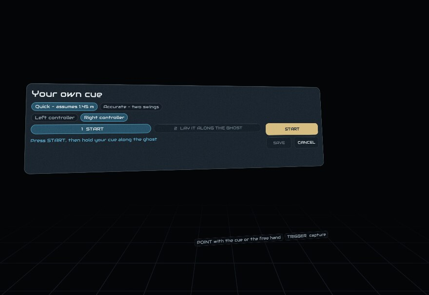
The SETTING UP row picks the method. On QUICK:
That is the whole of it. The direction comes out exact; the tip is as good as your eye was, on the assumption that your cue is a standard 1.45 m. If your cue is much shorter or longer than that, the tip will be out by the difference — use the other method.
On ACCURATE nothing is aimed at all. You rest one end of the cue on something solid and swing the other end around it: the end that is resting stays still in the room while the controller travels, and that alone says where that end is.
Controllers drift over time, and clamps get knocked. You do not have to stop and set the cue up again: hold either side trigger and the drawn cue stops still. Move your real cue until it lines up with it, then let go. That is it — you can do it down on the ball in the middle of a break without leaving the table.
Do it as often as you need. Each time it works the alignment out fresh, so it never builds up an error. Go back to CALIBRATE only if you change cue or move the clamp.
| Row | What it does |
|---|---|
| STROKE | SMOOTHED filters the tremble out of your aim and the sideways movement of the tip while leaving the delivery — and therefore the power — untouched. It is what a bridge hand does, and it is on by default: a real cue in real hands shakes in a way a virtual one does not. AS YOU CUE IT leaves the cue exactly where your hands put it. |
| CONTROLLER MODEL | HIDDEN by default: the drawn controller sits on the shaft where your clamp is, and depending where that is it can be the thing you are looking through when you are down on the shot. SHOWN puts it back. Only the one on the cue is affected — your free hand keeps its controller, since it carries the ball and points at menus. |
| CUE TURNS WITH YOUR WRIST | Rolls the drawn cue as you turn the real one, so the splice and the badge follow your hands. It is worked out separately from the aim and can only turn the model — it cannot move the tip or the line. Off by default. |
The table can be moved at any time, mid-frame included — that is how you bring a shot to you in a small room rather than walking round a twelve-foot table. With a controller clamped to a cue, though, one of your two sticks is on the end of a metre and a half of timber and the other hand may be empty. The MOVE IT row on CONTROLS chooses between three ways of working. Two are below; the third, SNAP TO THE EDGES, is for playing over a real table and has its own section further down.
| TWO STICKS | CUE HAND WORKS THE BALL | |
|---|---|---|
| Left stick | Slides the table about the floor. | The hand that is not on the cue keeps sliding the table about the floor, exactly as it does in two-stick mode. Nothing is lost by switching. |
| Right stick | Turns the table. | |
| The cue hand's stick | — | Up and down brings the table nearer and pushes it away, along the line you are looking down. Left and right turns the table about the cue ball. |
| On each fresh push | Nothing. | The table swings so the cue ball is directly in front of you, at the range it already had — nothing comes towards you or moves away, it only comes round. Then the stick works along that line until you let go. |
The cue hand is the one you set as CONTROLLER ON IT when you calibrated; with the ordinary two-controller cue it is whichever hand holds the butt. The table swings round once per push rather than continuously, so it cannot chase you around the room: let go, stand where you like, push again and the ball comes round from there.
If the table is drawn over a real piece of furniture, you can walk into its edge while leaning across for a shot. Press B while placing the table to mark it: a faint pane of light that you size to your own furniture. The left stick moves it, the right stick stretches it along and across, and the side triggers turn it. Show it all the time, never, or for a couple of seconds on a short press of B or Y while you play.
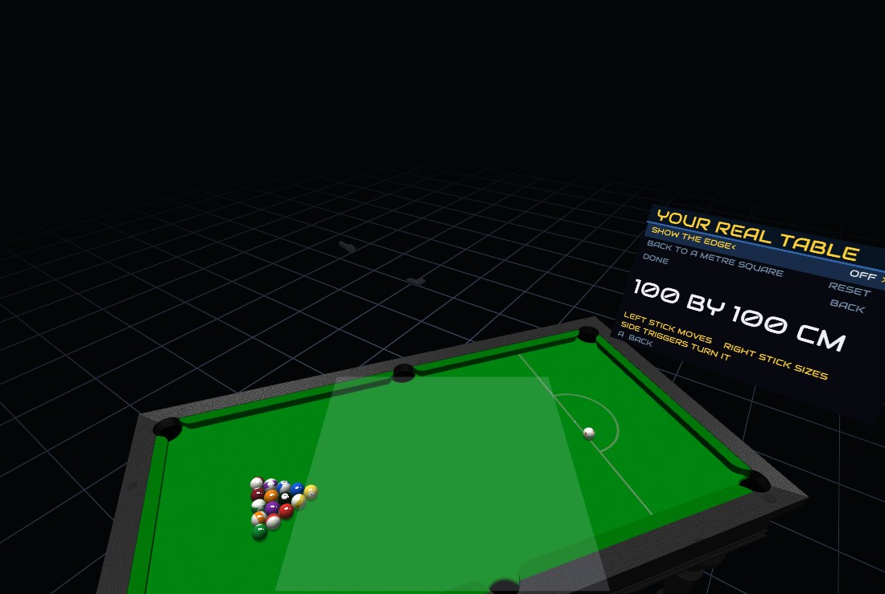
Once the mark is in, the MOVE IT row has a setting built around it: SNAP TO THE EDGES. Stand at your real table's edge and the virtual table squares itself to the edge you marked — the outer wood of the frame lands exactly on your real edge, so when you rest your bridge hand on the rail it is resting on real timber.
Sixteen games on the row, each on the table it is really played on — and some of them carry more games inside, on their RULES row. The rules below are the rules the game enforces — the referee applies all of them, so you never have to.
Click the GAME row on the main menu and you get a gallery rather than a list of names. Every card shows that game's table, racked, in the balls it is played with. Each table fills its own card, so the scale you are reading is the balls: a 67 mm pyramid ball on a twelve-foot bed covers much more cloth than a 50.8 mm pub ball on a seven-foot one.
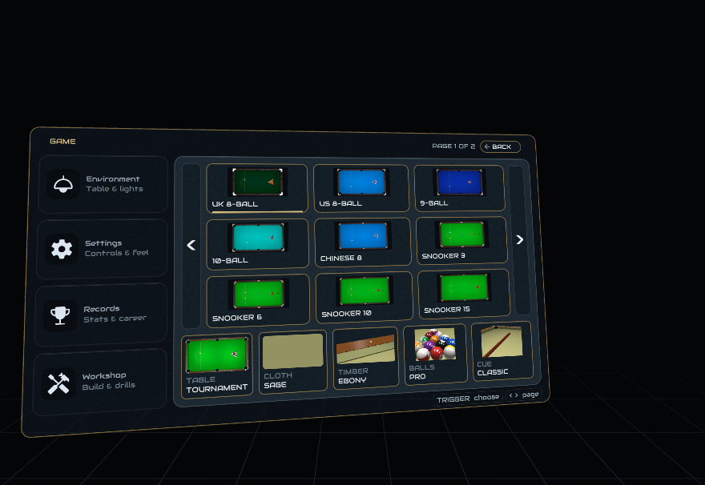
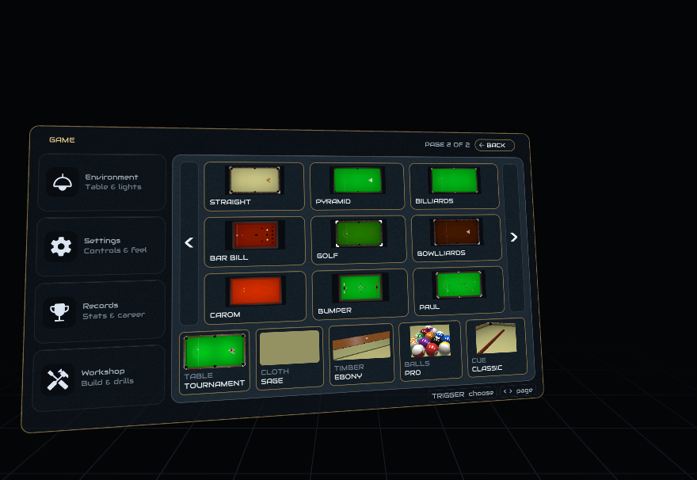
Pot a red, then a colour, then another red, and so on. Each red you pot stays down; each colour goes back on its spot until the reds are finished. When the last red and the colour after it are gone, you clear the colours in order from yellow to black.
Values. Red 1, yellow 2, green 3, brown 4, blue 5, pink 6, black 7.
Nominating. When you are on a colour you have to say which one, and the game takes the colour you aim at.
Fouls are hitting nothing, hitting the wrong ball first, potting the cue ball, jumping the cue ball over a ball, and driving any ball off the table. The penalty is four points, or the value of the ball you were on, the ball you hit first, or the highest ball you potted — whichever of those is greatest. The points go to your opponent.
No cushion requirement. Unlike the pool games, a shot that hits the ball on and sends nothing to a cushion and pots nothing is perfectly legal — that is what a safety often is.
After a foul your opponent plays from where the balls are, or from in hand if the cue ball was potted. If the foul leaves them unable to hit the ball on, they get a free ball: they may nominate any ball as the one they are on, and it scores what the real ball on is worth.
Miss. Failing to hit the ball on is always a foul, and the referee judges whether it is also a miss — whether your attempt was good enough — at the standard set on the RULES row (see Rules and the referee). When a miss is called your opponent may make you play the shot again from exactly where it was. Failing to escape a snooker counts — that is the most common miss there is. The one exemption is when you can no longer catch up on the balls left on the table: a player needing snookers is not called for a miss, so a hopeless frame cannot be dragged out by replays.
Three misses in a row lose the frame, but only genuine ones: a miss played from a snooker does not count towards it.
The end. Once the black is potted the frame is over. If the scores are level, the black is respotted, the player who did not pot it plays first from in hand, and the next score wins.
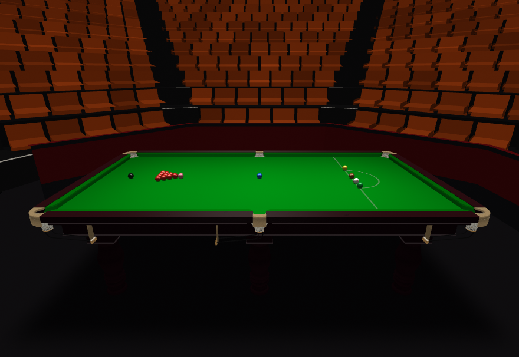
Exactly the rules above — reds and colours, the same values, the same fouls, free balls, misses and respotted black — with ten reds instead of fifteen, on a ten-foot table.
A frame takes about half as long, and a total clearance is a realistic thing to try for.
Snooker again, unchanged in every rule, with six reds on a seven-foot table.
Everything is within reach and frames are short, so this is the easiest way in if you have never played snooker, and the one to choose in a small room.
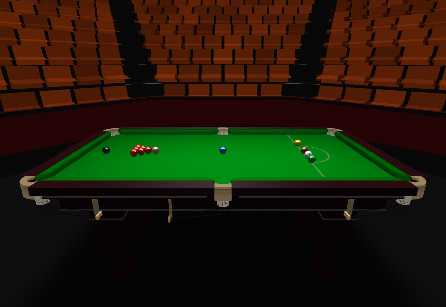
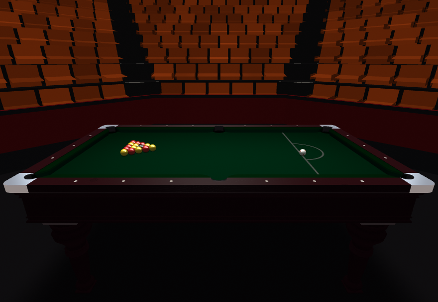
The pub game. The table is open until somebody pots a colour, and that colour becomes theirs; the other player takes the rest. Clear your seven, then pot the black to win.
Fouls, in every rule set: potting the cue ball, hitting nothing at all, hitting the other player's colour first, hitting the black before you are on it, and driving any ball off the table. Jumping the cue ball is not a foul in pool — except at BLACKBALL, whose book forbids it.
The black: potting it before your own colours are gone loses the frame, as does fouling on the shot that pots it.
What differs between PUB, INTERNATIONAL and ULTIMATE POOL is what a foul costs you, whether a shot has to reach a cushion, and what happens if the black goes in off the break. The fourth set, BLACKBALL, is described after the table. Choose on the RULES row of the main menu.
| PUB (2 SHOTS) | INTERNATIONAL | ULTIMATE POOL | |
|---|---|---|---|
| After a foul | Your opponent gets two visits. The cue ball stays where it finished. | One visit, ball in hand anywhere on the table. | |
| If the cue ball was potted | They play from in hand, behind the baulk line, inside the D. | Anywhere on the table, like any other foul. | |
| The first of the two shots | Free — they may hit any ball. Potting one of their own cancels the second shot. | Not applicable: there is only one visit. | |
| Must a shot reach a cushion? | No. A shot that pots nothing and touches no cushion is legal. | Yes. Pot a ball, or send some ball to a cushion after the contact, or it is a foul. | |
| Black off the break | Put back on its spot, break stands. | Put back on its spot, break stands. | Golden break — you win the frame. With the cue ball as well, or with any other foul, you lose it: the golden duck. |
WPA rules. The table is open after the break — whatever you pot first decides whether you are solids or stripes — and once your group is clear you are on the 8.
Fouls are potting the cue ball, hitting nothing, hitting the other group first, hitting the 8 first while the table is open or before your group is clear, hitting anything other than the 8 once you are on it, driving a ball off the table, and — as WPA rules require — playing a shot that neither pots a ball nor sends any ball to a cushion.
Ball in hand. Any foul gives your opponent the cue ball anywhere on the table, not just behind a line. It is a heavy penalty.
The 8. Pot it after your group is clear and you win. Pot it early, or foul on the shot that pots it, and you lose. On the break it is simply put back.
The RULES row carries four ways to play it. WPA 8-BALL is the code above and calls nothing. CALL THE BLACK asks for the last one only, which is how most people play it. CALL SHOT (WPA) is the rule book to the letter: ball and pocket declared on every stroke. KILLER is the pub elimination game on the same table.
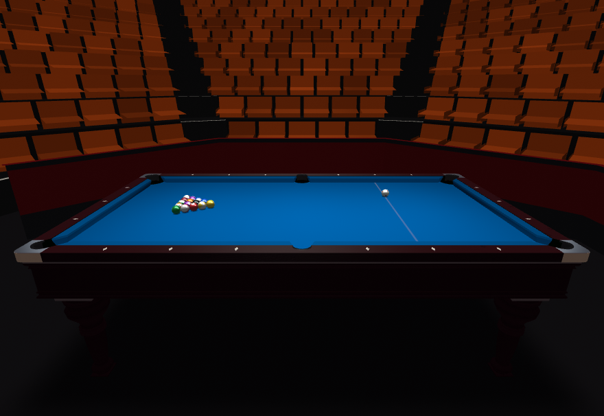
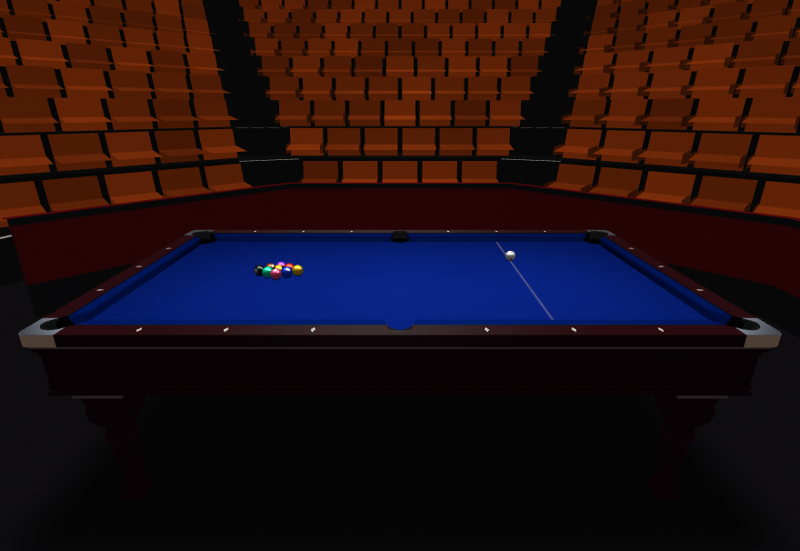
You must always hit the lowest numbered ball on the table first, but any ball may then go in. Pot the 9 legally and you win at once — including straight off the break, and including off a combination.
Fouls are potting the cue ball, hitting nothing, hitting anything other than the lowest ball first, failing to pot a ball or send any ball to a cushion after the contact, and driving a ball off the table.
Ball in hand anywhere on the table for the opponent, as at US 8-ball. If the 9 was potted on a foul it goes back on its spot. Three fouls in a row loses the frame.
The push-out. The player who takes the first shot after the break may declare a push-out: they may hit the cue ball anywhere they like, with no need to hit the lowest ball or reach a cushion, and the only foul is potting the cue ball. A 9 potted on a push-out goes back. Afterwards their opponent decides whether to play the resulting position or hand it straight back.
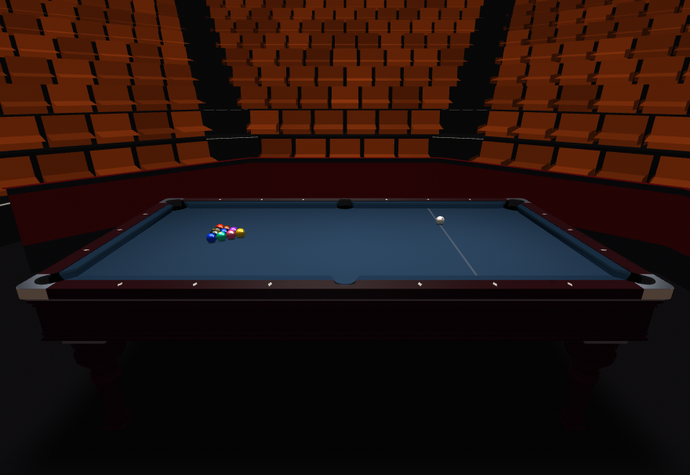
The same bed and the same rotation game as 9-ball: lowest ball first, any ball may then go in, three fouls in a row loses the frame, and the money ball ends it. The rack is what changes — ten balls out of a triangle instead of nine out of a diamond. A diamond opens up off almost any break and a triangle does not, so the table stays cluttered, the lowest ball is far more often tied up, and you will play a lot more safety. That is why the professionals prefer it.
The rack puts the 1 on the foot spot at the apex, the 10 in the middle — the centre of the third row — and the 2 and 3 on the two back corners, rows of one, two, three and four.
Fouls and ball in hand are 9-ball's exactly, including the cushion requirement and the push-out on the first shot after the break. The 10 potted off the wrong ball first is a foul: it goes back on its spot and your opponent has the table.
Pool balls and WPA 8-ball rules — identical to US 8-ball above, including ball in hand anywhere for any foul, and including the cushion requirement: a shot that neither pots a ball nor sends any ball to a cushion after the contact is a foul. Played on a ten-foot table built like a snooker table, with tight rounded pockets.
Those pockets are the whole difference. They reject a ball hit too hard and punish an approach that is even slightly off. Of the pool games it is the tightest at 1.50 ball widths, and only the two Russian pyramid tables are harder.
The RULES row carries four ways to play it. HEYBALL is the standard code and calls nothing — the obvious shots are exempt by the book, which is how the game is normally played. CALL THE BLACK asks for the last one only. CALL SHOT (CBSA) is the tournament reading, where ball and pocket are declared on every stroke. KILLER is the pub elimination game on the same table.
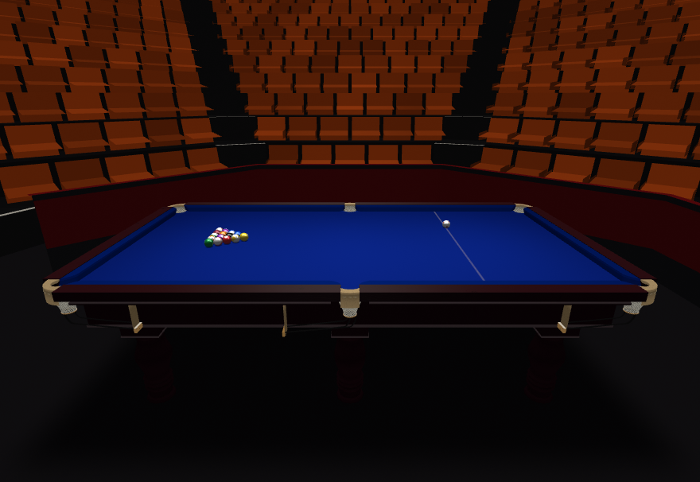
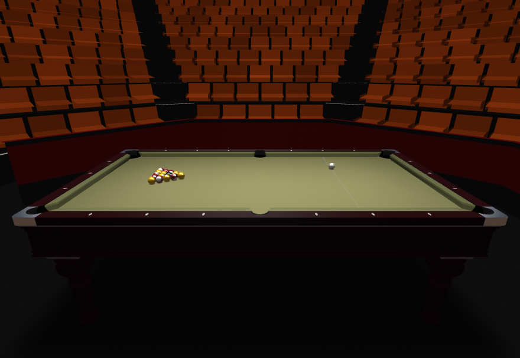
14.1 continuous, the old scoring game. There is no ball you must hit, no group and no order: every ball on the table is worth one point, whichever ball it is. You pick one, say it is going down, and if it does you score and carry on. First to 50 wins the frame — the real game is played to hundreds, this one is cut to a frame that fits a session.
Calling a ball. The ball you are aiming at is the ball you have called; there is no menu for it and nothing to press. Whatever your cue is pointing at when you strike is what you have declared. Aim at nothing in particular and you have called nothing, which makes the stroke a safety.
Scoring. Pot the called ball and it scores one, and so does every other ball that happened to go down on the same stroke — the accidental extra is a real part of the game. If the call is not made, nothing on that stroke counts and every ball that went down comes straight back up onto the long string behind the foot spot.
Your visit. Keep making your calls and you stay at the table. Miss one and your opponent is in, and the board says MISSED CALL — or SAFETY, if you called nothing at all.
Fouls are potting the cue ball, hitting nothing, driving a ball off the table, and a stroke that neither pots a ball nor sends any ball to a cushion. A foul is minus one, and the opening break is the one stroke that costs minus two — the break has to send two object balls to a cushion or pot a called ball. Three fouls in a row costs fifteen more and the whole table is racked again with the offender breaking it.
The rerack, which is what continuous means. You never clear all fifteen. When one ball is left the other fourteen go back as a triangle with the apex space empty; the break ball and the cue ball stay exactly where they lie, and that break ball is what you use to open the new rack. Your visit is not interrupted — play carries straight on, which is why a good player spends the end of a rack putting that last ball somewhere it will smash the new pack open. Clear the table outright and all fifteen go back and you break from in hand.
The hardest table in the game, and the rules are the easy part. Any of the fifteen is on, in any order, and each one you pot scores one. Eight wins: more than half, so it cannot be caught.
Pockets barely wider than the ball. A corner is five millimetres wider than the ball and a middle about fourteen and a half, on a ball 67 mm across. That leaves a couple of millimetres either side of a straight corner pot. The middles are the wider of the two, the opposite of every other table here, and the jaws are cut as a sharp mitre rather than rounded knuckles.
The house, not a D. You play from the дом: the whole width of the table behind the baulk line rather than an arc. A pyramid table has no D, so none is drawn.
Fouls are hitting nothing, potting the cue ball, potting nothing and reaching no cushion, and driving a ball off the table. The penalty is the sting of the game: one of your own potted balls goes back on the table for your opponent to shoot at, and they play from in hand in the house. A frame can go backwards.
Fifteen plain ivories with a small black numeral on both poles, and a red cue ball. With fifteen identical balls, that colour is the only thing telling you which one you are about to strike.
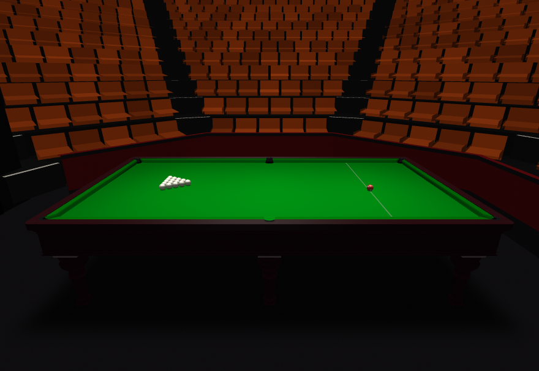
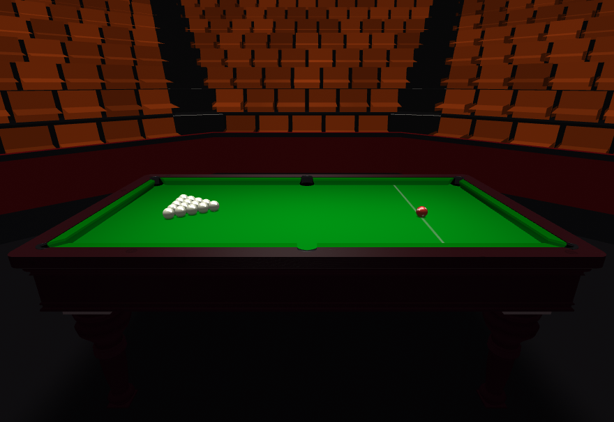
The same game, every rule unchanged, on the bed people actually own: 1.98 × 0.99 m with 57.15 mm balls, the smallest pairing the federation lists.
The pockets keep the same clearance rather than the same size — five millimetres at a corner and fourteen and a half at a middle — so it is just as tight as the big one and everything is within reach. This is the one to try pyramid on.
Two whites and a red on the full-size snooker table. There are no pockets to clear and no order to keep: you score by cannons, pots and in-offs, and a good player barely moves the balls.
| Stroke | Scores |
|---|---|
| Cannon — your ball touches both the others | 2 |
| Pot the other white, or go in-off the white | 2 |
| Pot the red, or go in-off the red | 3 |
They all count on the same stroke, so a cannon that pots both balls is seven. An in-off played with a cannon is priced by the ball you struck first — three if that was the red, two if it was the white.
An in-off leaves you in hand and you carry on. A legal stroke that scores nothing ends your turn and the table is played as it lies.
The red always comes back — on the Spot, or the Pyramid Spot if that is occupied, or the Centre Spot if both are. Pot the red over and over with nothing else in the stroke and it goes Spot, Spot, Centre in sequence. A potted white waits for its owner: it is off the table until their turn, and they then play from in hand.
Caps — 75 consecutive cannons and 15 consecutive hazard strokes. Exceeding either is a foul.
Every foul is two to your opponent and never more than two however many rules one stroke broke; the points already made in the break stand. A coup — in hand, cue ball pocketed, nothing struck — is a foul and not an in-off. The game is 100 up.
At every change of turn the two whites swap over, so the ball in front of you is always your own.
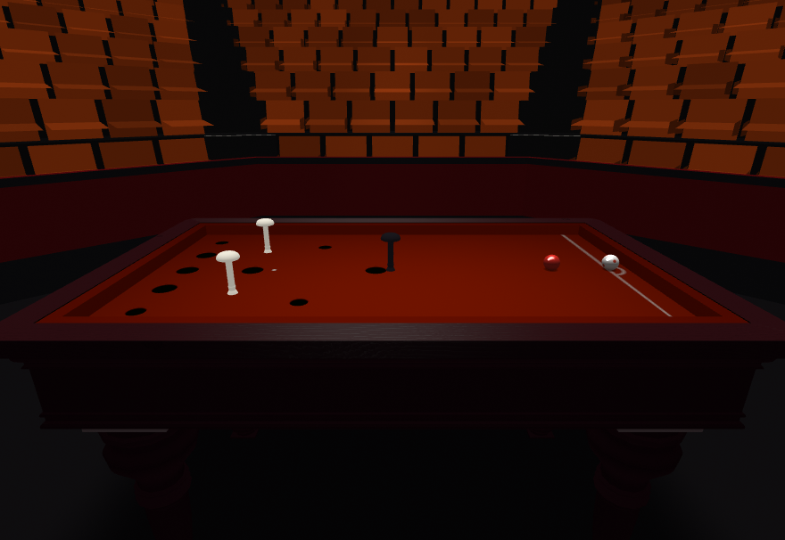
The odd one out in every way. Four unbroken cushions and no pockets on the rails at all — instead there are nine holes bored through the bed, worth 10 to 200, and three wooden skittles standing among them. Eight balls: one red and seven whites, all the same size. There is no cue ball to scratch. Every white on the table is one, you strike whichever the shot wants, and a white down a hole is a score.
The red scores double, so the red in the 200 is 400.
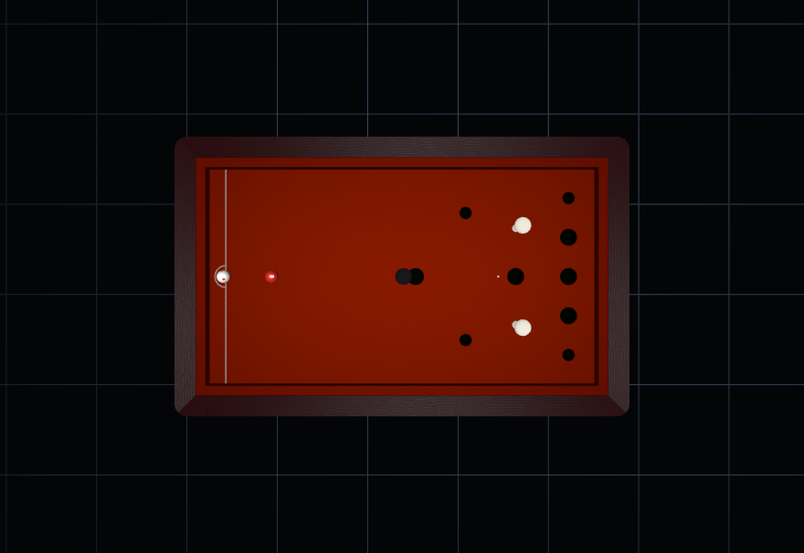
The four holes nearest you are a diamond: the 200 at the front of it with the black skittle standing right in front of that, the two 50s at its sides, and the 100 at its back between the two white skittles. Across the far end is a row of five: 30-20-10-20-30.
Every stroke is played from the D at the near end, so you are always shooting away from the 200. Reaching it means bringing a ball back down the table off a cushion or off another ball, and past a skittle you must not knock over. The easy scoring is the row of five at the far end.
The 200, the 100 and the 10 all sit on the centre line, so a ball sent straight up the middle drops into the first of them it reaches — which is why the 100 and the 10 have to be played on an angle.
A ball has to be rolled in, not driven. Rolled in gently it drops; hit hard it skips the far lip and carries on up the table. The holes are real holes with the cloth turned over the edge and a shaft below, so this is the same free fall a real board gives you.
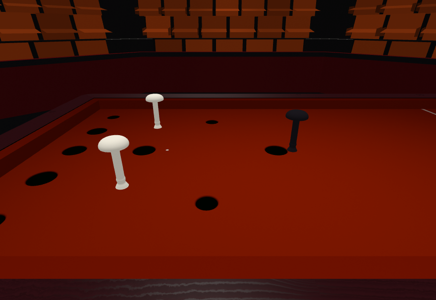
| Playing it | |
|---|---|
| Where you play from | The D at the base, every stroke — a half-disc of 40 mm radius round the break spot. The opening stroke is played from the spot itself, and the last-ball stroke from the middle of the D. |
| Which ball you get | One out of the trough while the rack still holds one. When the rack is empty you take the ball on the table furthest from the top cushion. |
| Your break | Runs on as long as you keep potting. A stroke that pots nothing ends it, and so does any foul. |
| Fouls cost your break, not points | Knocking over a white skittle; hitting nothing; sending a ball off the table or back over the baulk lines; and potting from the break position four times running (you get a "LEAVE ONE UP" warning after the third). |
| The black skittle | Knock it over and you lose your entire score. If a white went over as well, whichever fell first decides which penalty applies. |
| The end | A 17-minute clock, not a rack running out — a coin buys fifteen to twenty minutes on a real one. When it expires the bar drops: potted balls stop coming back out of the trough and play carries on until the balls are swallowed. |
| The last ball | With one ball left, the two white skittles are moved into the 50 holes and the stroke is played from the middle of the D. It only counts if the ball goes into the 100 or the 200 off one side cushion, and touching a white skittle voids it. Players take turns until it goes down — or the black falls. |
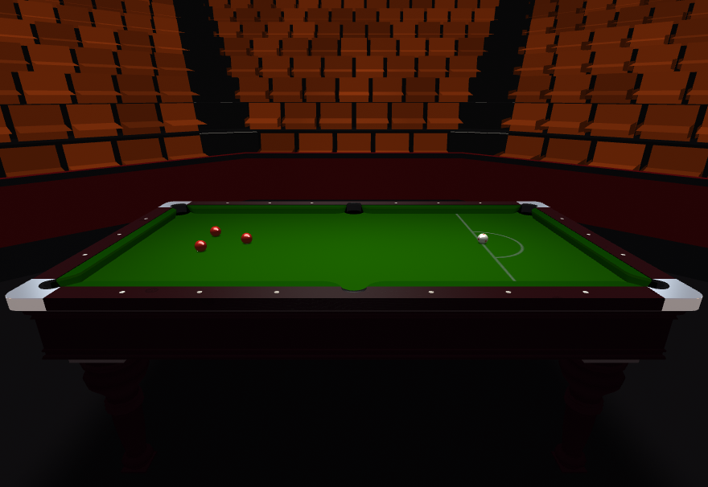
Eighteen holes on the pub table, off the old Billiard & Golf scoreboard. Each hole is a fixed arrangement of two, three or four reds inside the rack triangle, with a par of one more than the number of balls. Strokes are the score and fewer is better.
There are no fouls at all. No ball you must hit, no cushion requirement, no turn to lose. Missing everything simply costs you a stroke. Potting the cue ball costs one extra — so that stroke costs two — and the white goes back to the middle of the baulk line with the reds left exactly where they lie. Every other stroke is played from where the ball is.
A hole ends when the last red goes down, or at eight strokes, whichever comes first. The board tells you where you are in golfer's language: "HOLE 4 — 2 FOR PAR", then "THIS FOR PAR", then "THIS FOR BOGEY".
Two players play the same hole from identical racks. The lower score takes the honour and leads off the next hole; a tie leaves the honour where it was. Low total wins the round. The RULES row chooses eighteen holes, the front nine (par 38) or the back nine (par 35).
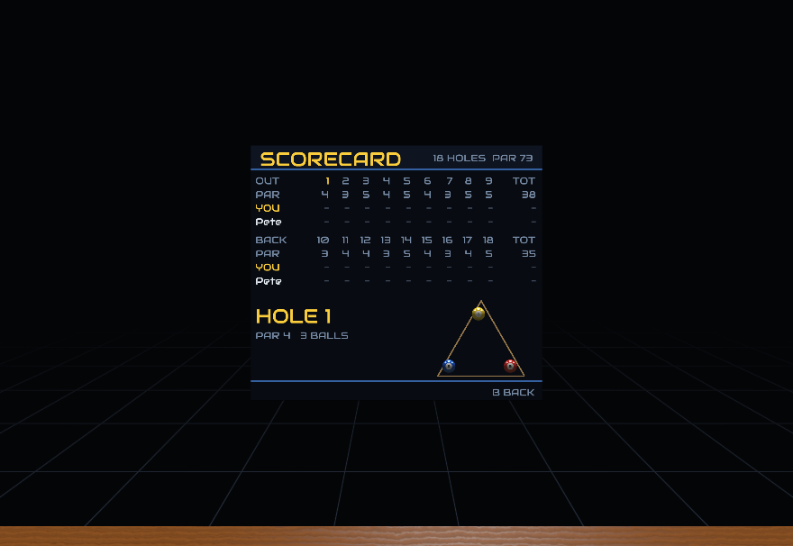
There is no rack. The whole snooker set — fifteen reds, six colours and the white — goes onto the cloth at random, differently every game, so there is no opening to learn and nothing to break. The white lies wherever it landed.
The break hits nothing. The opening stroke must touch no ball and no cushion. Touch either, or pot anything, and it is a foul worth two shots to your opponent.
Then alternate visits, and pot whatever you can reach — there is no ball on and no order. A red is one, a colour is two, the black is four, and everything potted stays down: nothing is ever spotted. A miss is not a foul; it simply ends your visit. An in-off is a foul, worth two shots to your opponent, and the ball it potted scores nothing. Two shots in hand are spent by potting, and after a scratch the white goes in the D, which is the only thing the D is for in this game.
You win by leading by more than is left. Twenty-nine points go on the table at the start, and the frame ends the moment one player is further ahead than the remaining balls can make up. If the table empties with the scores level, the black goes back on its spot and you play for it.
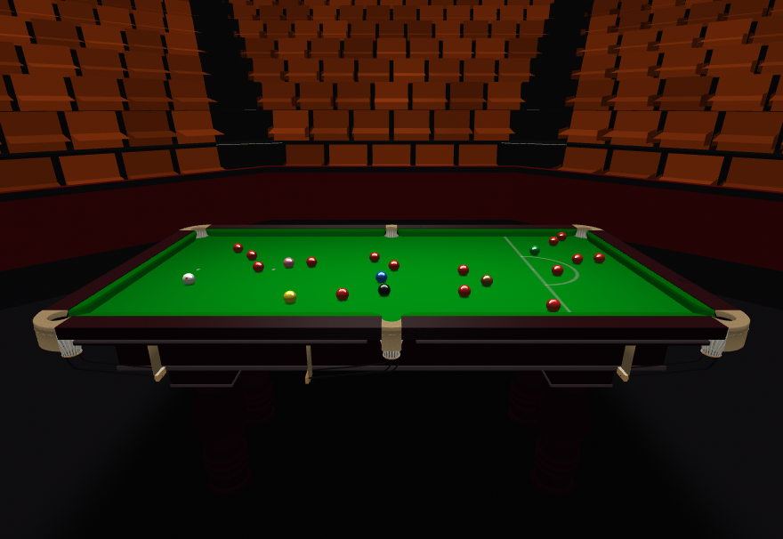
A new table with nowhere for anything to fall: four plain cushions all the way round. Nothing is ever potted, and every point is a cannon — your cue ball touching both the other balls in one stroke. You and your opponent each have a cue ball of your own, with a red between you, and the cloth is fast and the cushions the liveliest in the game, because the game is played off them.
Carom is one card on the game row; which of its four games you play is the RULES row, exactly as Killer sits on the 8-ball games. They differ in what the cannon must do on the way:
| STRAIGHT RAIL | A plain cannon scores. First to 30. |
| 2-CUSHION | The cue ball must touch two cushions before it reaches the second ball. First to 15. |
| 3-CUSHION | Three cushions before the second ball — the professional game, and very hard. First to 10. |
| FOUR-BALL | The Korean game, with a second red on the table: a point is a cannon on both reds, and your opponent's cue ball is the ball you must not touch. First to 15. |
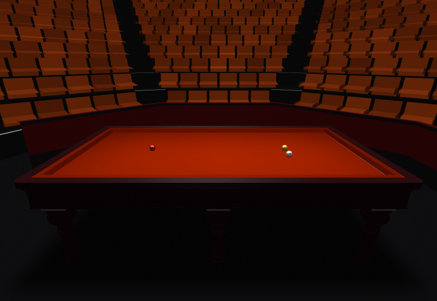
Every game uses the balls it is really played with, at the official size and weight. English pool is the odd one out: its cue ball is smaller and lighter than the object balls, a convention that comes from coin-operated tables needing to tell the white apart to return it. You will feel it — a light cue ball checks back off a full contact instead of stunning dead, and it throws the object ball further when you use sidespin. Billiards golf is played on that same pub table and inherits it.
| Game | Object balls | Cue ball | Specification |
|---|---|---|---|
| Snooker, 12ft and 10-red | 52.5 mm · 142 g | 52.5 mm · 142 g | WPBSA |
| Snooker, 6-red (7ft) | 50.8 mm · 116 g | 50.8 mm · 116 g | A compact set to suit the small table. 6-red is played full-size in competition, so there is no official spec for it on a 7ft bed. |
| UK 8-ball | 50.8 mm · 116 g | 47.6 mm · 94 g | WEPF: 2.000″ ±0.005″, 116 g ±2 g, with the traditional 1⅞″ cue ball |
| US 8-ball, 9-ball and 10-ball | 57.15 mm · 170 g | 57.15 mm · 170 g | WPA: 2¼″ ±0.005″, 160–170 g |
| Chinese 8-ball | 57.15 mm · 170 g | 57.15 mm · 170 g | WPA balls on a 10ft snooker-built table |
| Straight pool | 57.15 mm · 170 g | 57.15 mm · 170 g | WPA, on the 9ft American bed |
| Billiards golf | 50.8 mm · 116 g | 47.6 mm · 94 g | The UK 7ft table's own set, small white included |
| English billiards | 52.5 mm · 142 g | 52.5 mm · 142 g | Snooker balls: a red and two whites |
| Russian pyramid, 12ft | 67 mm · 255 g | 67 mm · 255 g | The federation's current tournament ball. The largest ball in the game, on the smallest pockets. |
| Russian pyramid, 7ft | 57.15 mm · 158 g | 57.15 mm · 158 g | 2¼″, the smallest pairing the federation lists |
| Paul | 42 mm · 110 g | 42 mm · 110 g | A small home set: a full snooker set of twenty-two balls, at the size a 6 ft table comes with. The smallest balls in the game, on 54 mm pockets. |
| Bar billiards | 47.6 mm · 120 g | All eight balls are the same: one red and seven whites, and any white on the table can be struck. | |
| Carom | 61.5 mm · 210 g | 61.5 mm · 210 g | Two cue balls — one each — and a red. Four-Ball adds a second red. |
Match length is set on the main menu: one frame, or best of 3, 5, 7, 9 or 11. The break alternates between players and the score carries through the match. A player who cannot catch up will concede rather than play it out.
Two games end on something other than a score: bar billiards ends when its clock runs out, and billiards golf ends when the round does.
Every game has more than one table to play it on, and the table you choose changes how the game plays — unlike the cloth and the woodwork under Table and room, which do not. It is the TABLE row on the main menu, under the game.
The row holds three things: the standard table cut to one of three specifications, four beds that are not really tables at all, and any table you have built and kept. Click the row and it opens as a gallery of photographed cards, one per table, your kept workshop tables included — the same arrangement as the game picker, and the chevrons still step through it if you only want the next one. Your choice is remembered per game, so tightening snooker does not tighten your pool table.
The same game on three different tables. Two things change between them: how much room the pockets give and how fast the cloth is.
| Table | PRO | TOURNAMENT | CLUB |
|---|---|---|---|
| Snooker 12 ft and 10-red, English billiards CORNER |
1.60 · 84.0 mm | 1.66 · 87.0 mm | 1.81 · 95.0 mm |
| MIDDLE | 1.73 · 90.8 mm | 1.79 · 94.0 mm | 2.00 · 105.0 mm |
| UK 8-ball 7 ft, 6-red snooker, billiards golf CORNER |
1.60 · 81.3 mm | 1.65 · 84.0 mm | 1.75 · 89.0 mm |
| MIDDLE | 1.60 · 81.3 mm | 1.69 · 86.0 mm | 1.81 · 92.0 mm |
| US 8-ball, 9-ball, 10-ball, straight pool CORNER |
1.94 · 111.1 mm | 2.00 · 114.3 mm | 2.10 · 120.0 mm |
| MIDDLE | 1.86 · 106.4 mm | 1.92 · 110.0 mm | 2.03 · 116.0 mm |
| Chinese 8-ball 10 ft CORNER |
1.50 · 85.7 mm | 1.54 · 88.0 mm | 1.61 · 92.0 mm |
| MIDDLE | 1.50 · 85.7 mm | 1.58 · 90.0 mm | 1.66 · 95.0 mm |
| Cloth | Fast | The shipped roll | Slow, and the cushions are 2% deader with it |
A few games have no ladder and say ONE TABLE, AS BUILT: both Russian pyramids, whose pockets are barely wider than the ball by design; bar billiards, which has no rail pockets to cut; Paul, which is one particular table in somebody's house; and carom, whose table has no pockets at all.
On the same row, after the three specs: L-SHAPEDHEXAGONOCTAGONROUND
These are the workshop's shapes offered as ordinary choices, so you can play a real frame of snooker round a corner without building anything. Every game takes them except bar billiards, whose scoring is bored through the bed, English billiards, and carom.
Build one in the workshop, choose which games it is for, and press KEEP THIS TABLE. It appears on the TABLE row beside the shipped ones, for those games only, under a name made from what it is — L 84MM, HEX 76MM, ROUND 112MM. There are twelve slots. FORGET IT throws one away.
The rules are enforced for you, and called out loud. You do not have to keep score or remember what is on.
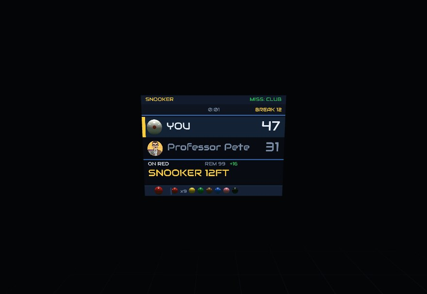
At snooker that includes reds and colours in the right order, colours going back on their spots, free balls after a foul, called misses, and the final clearance from yellow to black. At the pool games it includes your group, the two-shot carry at UK 8-ball, and the push-out at 9-ball. Elsewhere it includes cannons and in-offs at English billiards, the called ball at straight pool, the cushions counted before the second ball at carom, and the skittles and the clock at bar billiards.
Hold X at any point and the board is replaced by a live photograph of the table from above, for as long as you hold it.
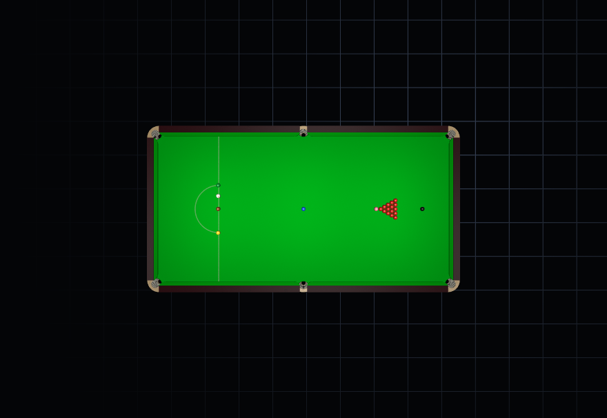
You are asked what you want to do. You can play on from where the balls have finished, or make your opponent play the shot again. If a miss was called and the table can be put back as it was, that is offered too. The referee announces what you chose.
In the snooker games, failing to hit the ball on is always a foul — but whether it is also called a miss depends on the effort you made, exactly as a real referee judges it.
Where to set it. The RULES row on the snooker games. It has three strictnesses, and it can be turned off, in which case there is no judgement at all and every failure to hit the ball on is a miss, as it always was before the rule existed.
| MISS: AMATEUR | A genuine try is enough — within about three ball widths, with most of the pace to get there. |
| MISS: CLUB | The default. Within a ball and a half, at nearly full pace. |
| MISS: PRO | As on television: almost every failure is called. Within about a third of a ball, and the cue ball must have had the pace to pass the ball on. |
How the referee decides. He judges the stroke against the ball you came nearest to, not against every legal ball on the table — a stroke aimed at one red is not marked down for the fourteen it ignored. Two things then settle it:
| How close you came | Measured in ball widths — roughly three balls at AMATEUR, a ball and a half at CLUB, a third of a ball at PRO. |
| Whether it was a real attempt | How far the cue ball travelled against how far it had to go. A dribble that stops short is a miss however well aimed it was. |
Two allowances are made on top of that, because a referee makes them. You get three times the room when you were snookered — an escape off three cushions that finishes a ball's width away is a good attempt by anybody's reckoning — and more room the longer the shot, so nobody is called for drift on a twelve-foot roll that the same drift on a tap from a foot away would be called for. Three called misses in a row lose the frame — but only ones you were not snookered for: an attempt the referee accepted, or a miss played from a snooker, does not count towards the three, and a single accepted attempt clears the tally.
The same row has a fourth stop, SHOOTOUT. It replaces the miss rule rather than sitting beside it: it is a different frame altogether, played against a clock — see The games.
To call a shot is to say, before you play it, which ball you are potting and where it is going. Four games can ask for it.
Where you set it is the RULES row on the main menu, and each game words it its own way:
| Straight pool | CALL THE BALL, the default, wants the ball only, and it may go down any pocket. CALL BALL AND POCKET wants both — nothing counts unless it was declared first, and that is the real game. |
| 10-ball | CALL SHOT (WPA). Every stroke is called; the break is not. |
| US 8-ball | CALL THE BLACK asks only for the last one, which is how most people play. CALL SHOT (WPA) asks for every stroke, which is how the rule book has it. |
| Chinese 8-ball | The same two, with CALL SHOT (CBSA) for the tournament reading. |
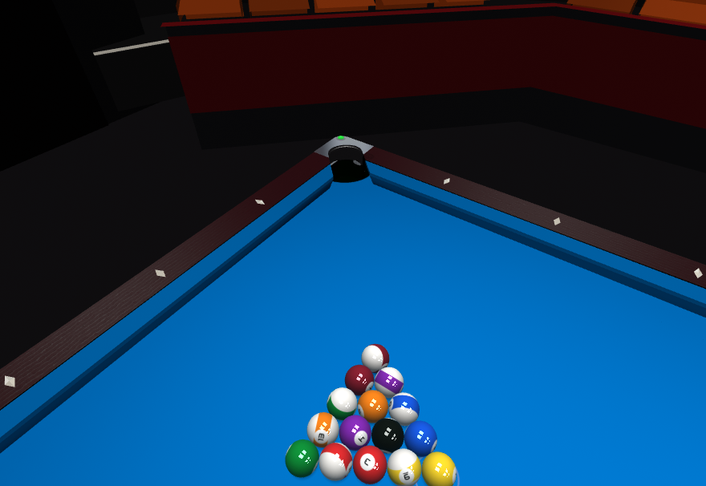
What the lamps mean. There is one behind each pocket:
| Flashing green | The game's own call. It has picked this pocket for you; play the shot and it stands. |
| Solid green | A pocket you declared. |
| Red | A call is owed on this stroke, and this is not the pocket it is on. |
| Amber, filling up | The pocket you are looking at now, filling as the dwell runs. Let it fill and it is called. |
| Grey | Nothing needs calling this stroke. |
The called ball gets a chalk ring on the cloth as well, so one glance tells you both halves of what is booked. Nothing is ever called on the break, and the scoreboard says NO CALL NEEDED so you are not left wondering.
Overruling the game's choice — or making the call yourself when the shot is ambiguous — is the CALL A POCKET row on CONTROLS, and there are three ways to do it:
| LOOK + TRIGGER | Hold the trigger on your free hand, look at a ball or a pocket, and release to call it. |
| LOOK, STOOD UP | Look and hold, no trigger. It only listens while you are stood up off the shot, so looking around while you are down on the ball changes nothing. |
| POINT + TRIGGER | A laser from your free hand — or from the cue itself, if you have a real cue attached. |
The computer players call their pockets too, from the plan they actually made, and you see their call light up while their shot is still rolling.
The REF VOICE row on the main menu sets a female voice, a male voice, or no voice at all. The scoreboard stays either way.
Eight computer players. They differ in how straight they hit the ball, how much they think about where the cue ball finishes, how much risk they take, and how well they get out of trouble. The bars below are their actual settings.
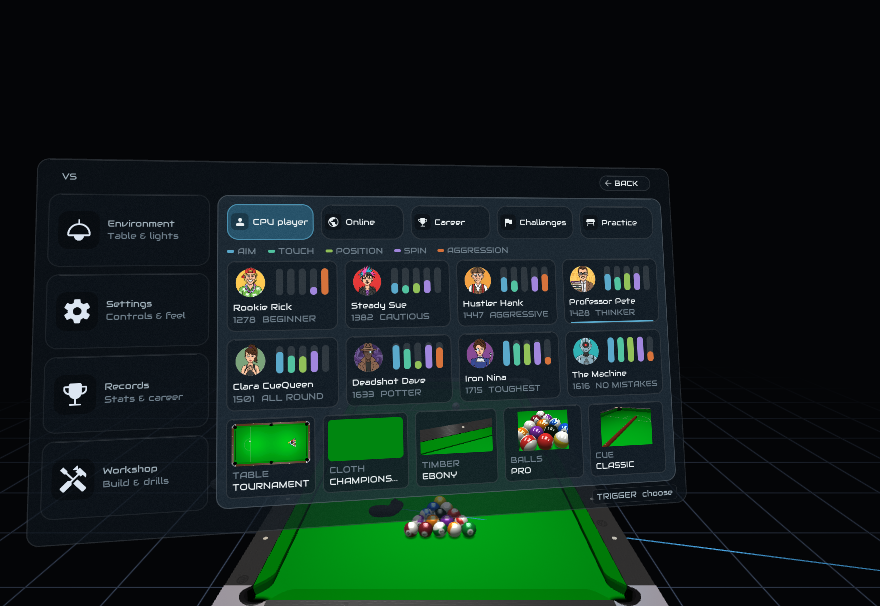
Takes on everything and misses most of it. Hits the ball far too hard and has no idea where the cue ball will finish. Start here.
Will not take on a pot she does not fancy, and plays safe instead. You will not get many free chances, but she will not punish you hard either.
Plans properly and is good at breaking up awkward clusters, but he is not the straightest potter. He will build a break if you let him.
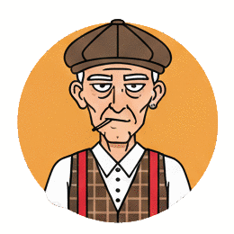
Fast and attacking. Hits everything with pace and takes on pots other players would leave alone. Streaky, and dangerous when it comes off.
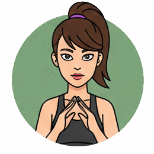
Accurate, balanced and hard to fault. The first opponent who will make you work for the frame rather than wait for a mistake.
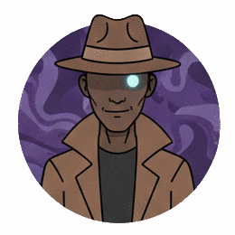
Pots nearly everything he looks at, from anywhere. He does not think much about the next shot, so his breaks tend to end by themselves.
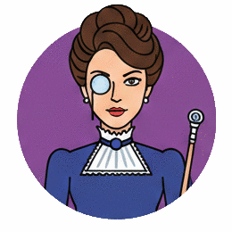
Very straight and very controlled. She plays position on every shot, breaks clusters open when she needs to, and will punish a loose safety.
Aims perfectly and thinks about every shot for as long as it takes. It makes centuries at snooker regularly, with a best break of 134.
RECORDS on the main menu keeps your results against each player, and your best breaks. They count on the standard table only — see Which table. Any of the three specs still counts, because a spec is the shipped table cut to a published size; a different bed shape, a table you built, or an opponent's table online does not, and the page tells you which one it is declining.
They aim at the real opening the cushion noses leave rather than at a line through the middle of the pocket, and on a cut they err towards the far jaw, which is the safer side to be wrong on. Given ball in hand they work back from the shots the position offers, and they always leave themselves able to reach the ball on.
They play the newer games too. English billiards has its own planner, since a cannon is the commonest scoring stroke there and it pockets nothing, while an in-off scores here and fouls everywhere else. Bar billiards has one as well: it plays in-offs, plants, contacts at five thicknesses and one-cushion shots around a skittle, and it will not risk the black skittle.
A season of matches against the other players, with a league table.
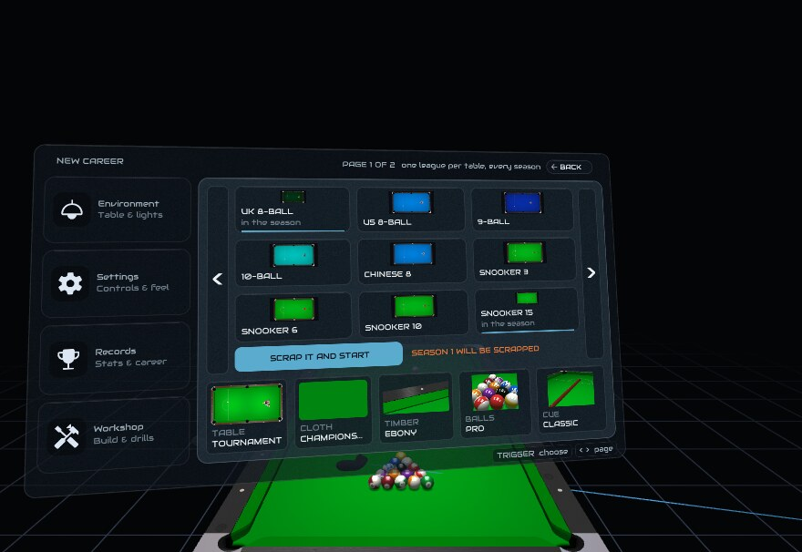
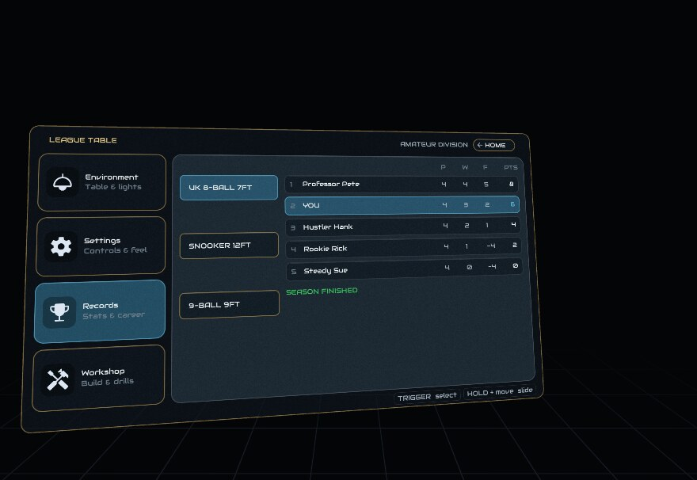
You work up through the field as you win, and your progress is saved, so you can come back to a season over several sittings.
Two ways to play without an opponent.
Free practice gives you the table on your own with no rules and no scoring. Put the balls wherever you like and hit them.
Challenges set you a goal on a fixed layout — clear the table, or reach a score. Each one is judged over a single visit, so a miss ends the attempt and you start again.
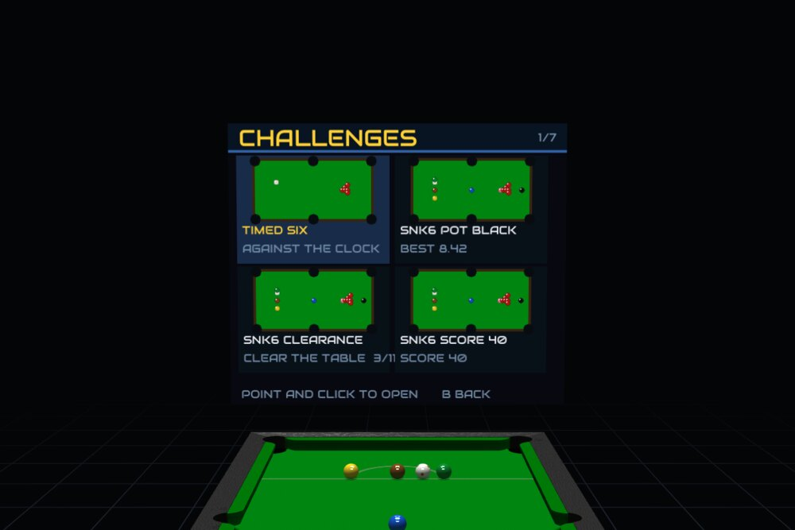
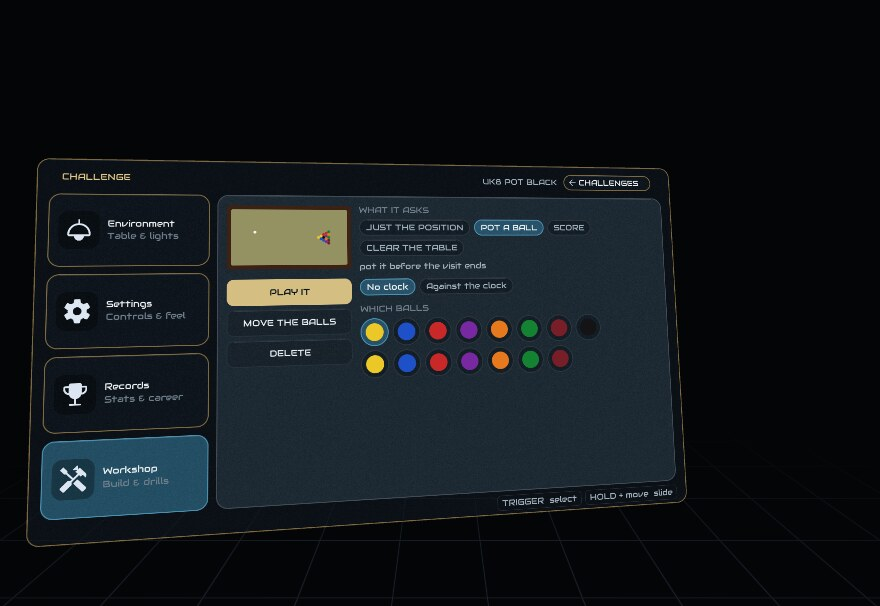
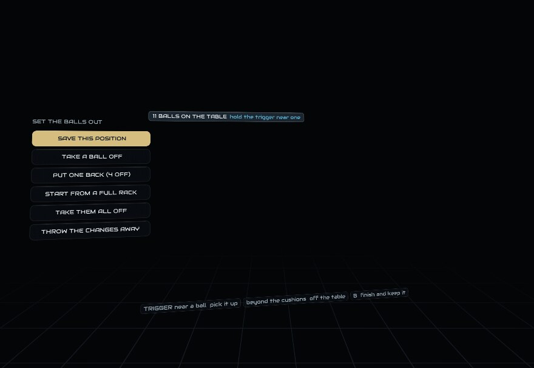
Every shot is recorded as it happens. Watch the one that just went in from anywhere in the room, and keep the ones worth keeping.
After any shot, INSTANT REPLAY on the pause menu plays it again — the swing of the cue included, not just the balls. The view is yours: the same controls that move the table move it during a replay, so you can watch from the pocket's end, from above, or from where your opponent stood. Hold the trigger for slow motion, press A to watch it again, and Y to keep it — the board answers SAVED 3/32, and it will not save the same shot twice.
REPLAY GALLERY on the pause menu and REPLAYS on the main menu browse what you have kept, twelve to a page. A replay carries the table it was played on inside it, so a shot saved on one table still plays back on that table after you have moved on to another.
Two headsets share one table, either on the same wi-fi or over the internet.
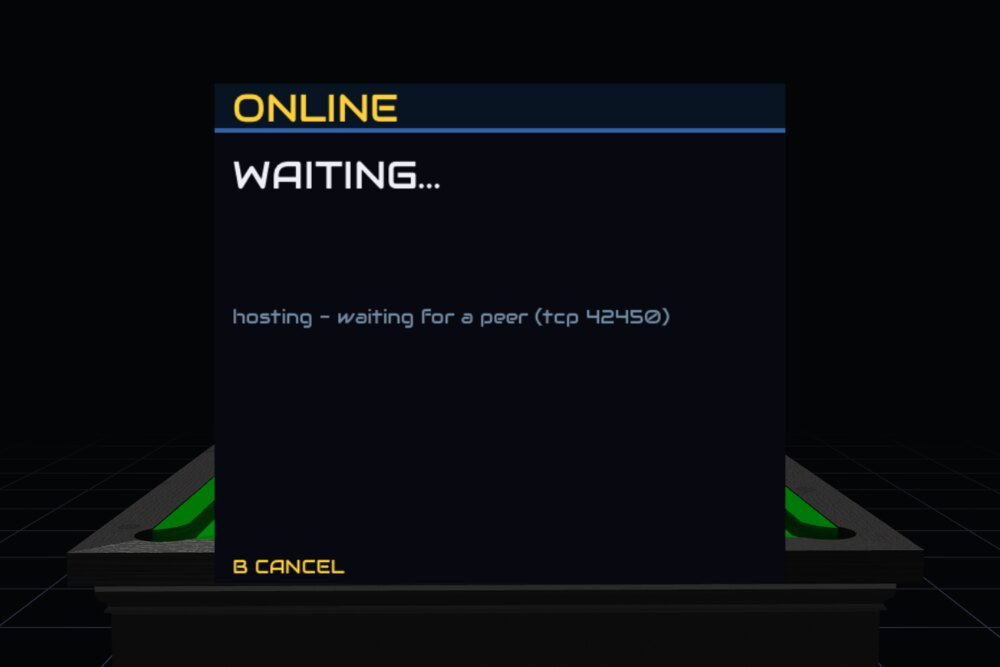
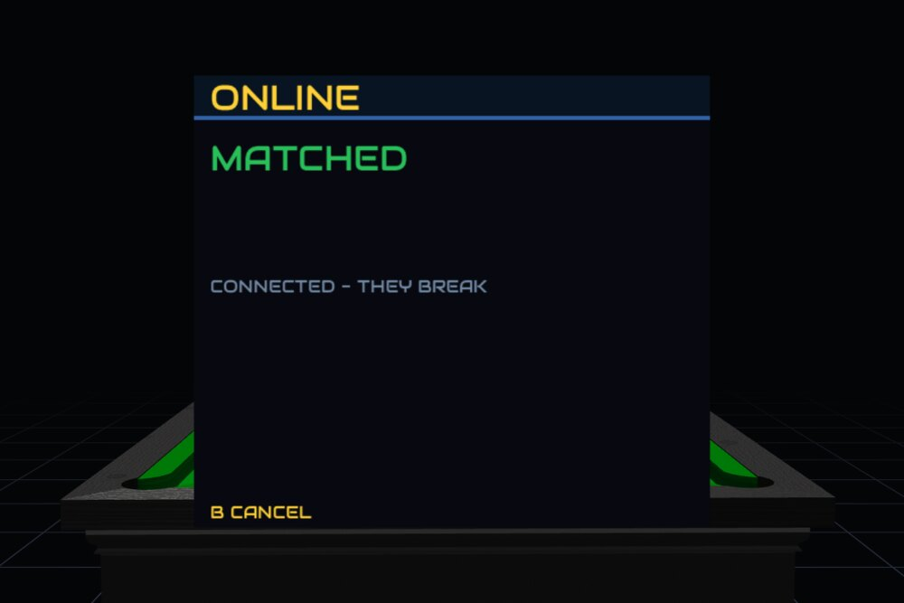
| Option | Use it when |
|---|---|
| LAN (WI-FI) | You are both in the same house on the same network. One hosts, the other joins, and no code is needed. |
| HOST / JOIN | You are in different places. The host gets a code to share; the other player types it in. |
| QUICK | You want a game against whoever else is waiting. |
| BROWSE | You want to see which rooms are open and pick one. |
You both see the same table, the same balls and the same score. You will see your opponent's cue move as they play, and it is the cue they chose. The referee calls fouls at both ends, and the player who was fouled against makes the decision.
You can change the table, the cloth, the woodwork, the balls, the lighting and what surrounds you. None of it changes how the game plays.
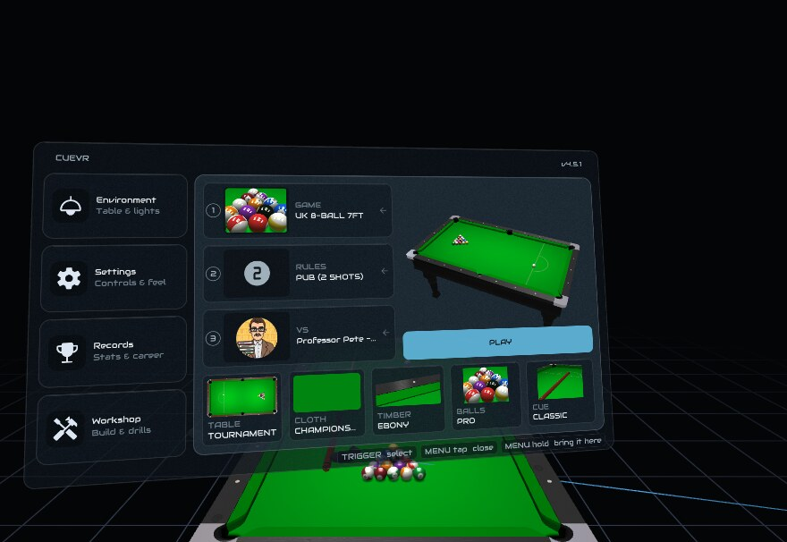
| Row | What it changes |
|---|---|
| CLOTH | The colour of the cloth. Twenty-four to choose from. |
| FRAME | The timber of the frame and rails — seven finishes. |
| TABLE | The build of the table itself: legs, cabinet and proportions. Four designs, or AUTO to let each game bring its own. |
| LIGHTING | The light rig over the table. |
| BALLS | Which set of balls is racked. Ten sets; the row opens a gallery. |
| CUE BALL SPOTS | Whether the cue ball carries spots. With them on you can see what the white is doing — how much it is spinning and which way. |
| CUE | Your cue, from a rack of eighteen. |
| SURROUNDINGS | Your own room, a dark hall, or an arena. |
| BUILD A CUE | Start from any of the eighteen cues and change the parts you care about: splice points, point length, veneers, shaft (ash or maple), butt figure, and the splice, accent and butt colours. The cue you are building lies on the table while you work. |
| DESIGN A BALL SET | Start from an authored set and change the style, numbers, band width, number spokes, stripe ground, the low balls, the high balls and the black. Any colour row can step back to PER NUMBER to take its colour from the set's own palette. |
Both builders save with your preferences, and your custom cue never appears in your opponent's hands online — they see the cue they chose.
Four bodies, on the TABLE row. Each one follows the shape of the bed, so an L-shaped or many-sided table gets the design you asked for rather than a plain box.
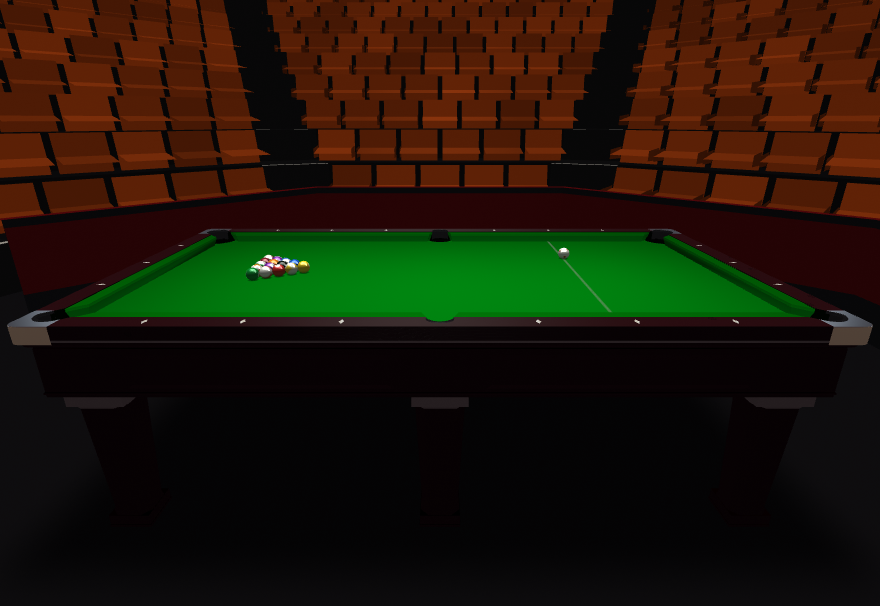
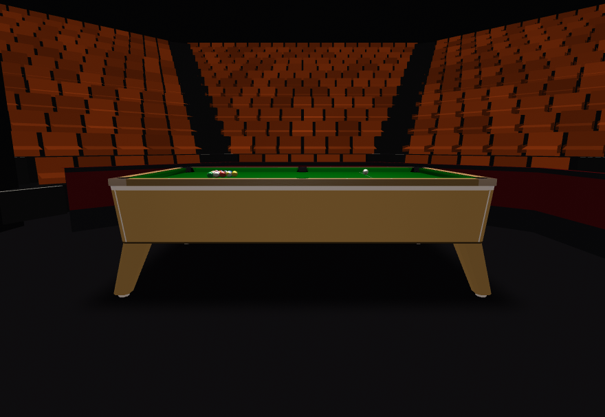
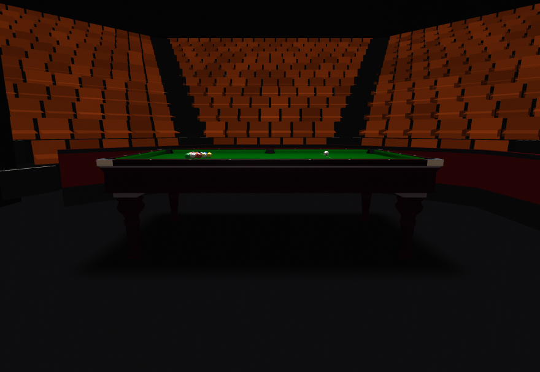
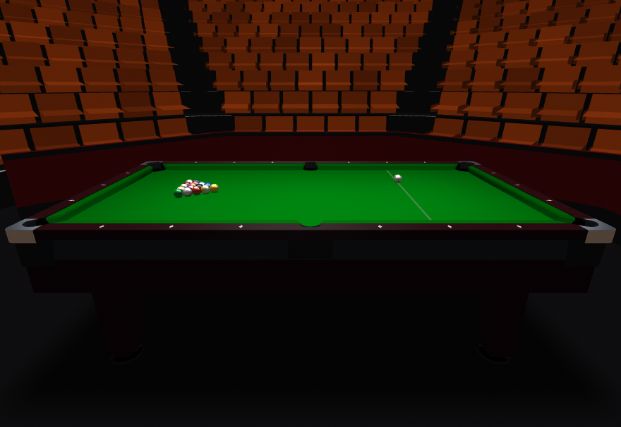
AUTO gives each table the body it would really have: the pub table gets CABINET, the American beds and straight pool get AMERICAN, 6-red snooker gets REGENCY, the 10 ft snooker table gets VICTORIAN, any many-sided or round bed gets VICTORIAN, and the rest — the 12 ft match table and the Chinese 10 ft — get REGENCY.
Ten sets. Choose the one you can read most easily from the far end of the table. The BALLS row opens a gallery: one rack, one table, one camera, so the only difference between two cards is the set.
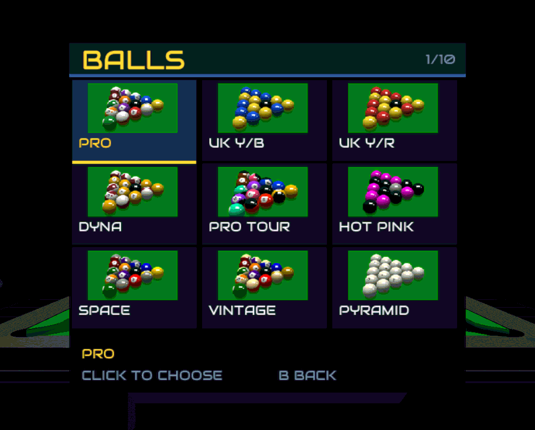
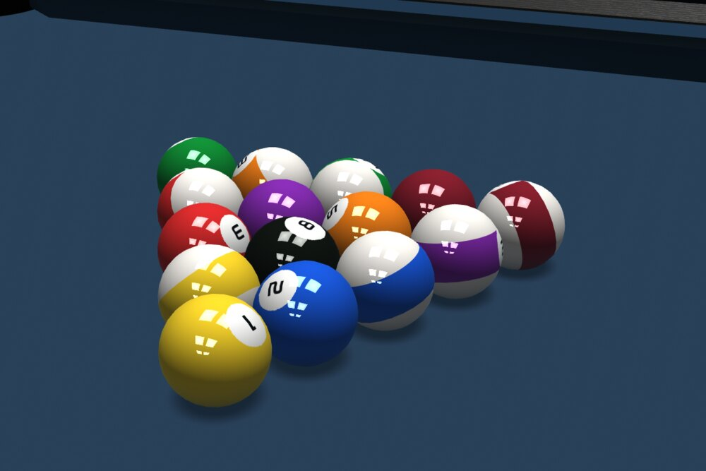
Seven woods, on the FRAME row, and they cover the body as well as the rails. Clicking the row opens a card of swatches drawn the way the frame is built, with the lit cap above and the rail's own colour below, so a swatch looks like the timber you will get.
Twenty-four colours. Here are eight of them:
The rest: SILVERTAUPEGOLDNUTMEGRANGER GREENOLIVECHAMPIONSHIPSAGEPOWDER BLUENAVYFRENCH NAVYROYAL NAVYMAROONCHERRYREDORANGE
The pocket you can see cut into the cloth is exactly the pocket that catches the ball. Every table's is built to its own published specification, and a snooker corner and an American one are nothing like each other.
The number that matters is the opening: the narrowest passage across the pocket, which is what a ball has to fit through. Millimetres alone will not tell you much, because the balls are different sizes too, so it is quoted in ball widths. A pocket 1.6 balls across leaves you half a ball of margin either side of a straight pot; one at 1.07 leaves you two and a half millimetres.
| Table | Corner | Middle |
|---|---|---|
| Snooker 12 ft and 10-red, English billiards | 1.60 balls · 84.0 mm | 1.73 · 90.8 mm |
| UK 8-ball 7 ft, 6-red snooker, billiards golf | 1.60 balls · 81.3 mm | 1.60 · 81.3 mm |
| US 8-ball, 9-ball, 10-ball, straight pool | 1.94 balls · 111.1 mm | 1.86 · 106.4 mm |
| Chinese 8-ball 10 ft | 1.50 balls · 85.7 mm | 1.50 · 85.7 mm |
| Russian pyramid 12 ft | 1.07 balls · 71.7 mm | 1.22 · 81.5 mm |
| Russian pyramid 7 ft | 1.08 balls · 62.0 mm | 1.25 · 71.6 mm |
| Paul, 6 ft | 1.29 balls · 54.0 mm | 1.29 · 54.0 mm |
An English pocket's facings are a four-point curve. It leaves the straight cushion nose 70 mm out from the pocket and arrives where the hole in the timber meets the frame's inner face, on a tangent set by the pocket's own centre line. A corner arrives at 45°, a middle at 10° off square. Where the curve meets the straight rail it is blended rather than cornered.
An American pocket is not curved at all: the facings are a straight mitre, cut at an angle to the rail. A Russian pyramid pocket is mitred as well, and cut sharp.
The rim is the flat, rounded cloth around the hole before the timber begins, and it is most of what gives a snooker pocket its look. On the snooker and English billiards tables it reaches 61.4 mm out from the centre at a corner and 67.4 mm at a middle; on the Chinese table 59.8 and 61.9 mm. The ball never has to fit through it: the opening is cushion and the rim is cloth, so a bigger rim does not make a pocket easier.
If you want to see what a different pocket plays like, you can build one — see the next section.
The TABLE WORKSHOP on the main menu is a real table designer: the bed, the pockets, the jaws and the game. The table in front of you changes as you turn the knobs, and anything that would make it unplayable is refused with the reason.
| To do this | Do that |
|---|---|
| Choose a row | Point at it. |
| Nudge it one step | Pull the trigger on the chevron at either end of the row — left third down, right third up. |
| Run it a long way | Pull the trigger in the middle of the row and hold it. How far left or right of the middle you are pointing sets the speed; a full push crosses the whole range in about two seconds. The table is rebuilt once, when you let go. |
| Change page | The PAGE row at the bottom. |
| Move the table itself | The sticks still work: left slides, right turns. Height is not available on this screen. |
| Leave | The BACK row. No button leaves this screen. |
Named rows — START FROM, BED SHAPE, JAW STYLE, RULES and both SOFTNESS rows — step one press at a time however hard you push.
| Row | What it does | Range |
|---|---|---|
| BED LENGTH | The length of the playing surface. On any shape but a rectangle the row is called SIZE, because there is only one dimension. | 800–4000 mm, 50 mm a press |
| BED WIDTH | The width. The row disappears on every shape except RECTANGLE. | 400–4000 mm, 50 mm a press |
| BED SHAPE | Ten shapes — see below. | — |
| BALL SIZE | The object balls, across. | 20–160 mm, 1 mm a press |
| CUE BALL SIZE | A separate white, as English pool has. Wind it right down and it reads SAME AS THE SET. | 22–160 mm, or SAME AS THE SET |
These rows set the hole: the circle a ball is caught by. They do not set the opening — that comes out of the finished table, and is shown to you at the bottom of the panel.
| Row | What it does | Range |
|---|---|---|
| CORNER POCKET / MIDDLE POCKET | The hole, across. | 40–300 mm, 2 mm a press |
| CORNER DEPTH / MIDDLE DEPTH | How much deeper than the hole the catching circle sits. | 0–100 mm |
| CORNER CATCH / MIDDLE CATCH | Taken off the catching circle. It is signed: positive shrinks the catch, and negative makes the catch wider than the mouth — which is how a Russian table works. | −60 to +60 mm |
| RAIL WIDTH | The width of the rail timber. | 20–200 mm, 2 mm a press |
| Row | What it does | Range |
|---|---|---|
| JAW STYLE | ROUNDED (ENGLISH) or MITRED (AMERICAN). One press. | two values |
| CORNER ANGLE | Rounded: degrees off the pocket's axis. Mitred: degrees off the rail. | 15–75°, or 20–89° mitred |
| MIDDLE ANGLE | Rounded: signed, degrees off square — the shipped tables use +10°. Mitred: degrees off the rail. | −40 to +40°, or 20–89° mitred |
| CORNER SOFTNESS | Where the jaw curve starts along the straight rail. | 30–200 mm, 2 mm a press |
| MIDDLE SOFTNESS | The same, for the middles. Reads AS CORNER if it has never been set. | 30–200 mm, 2 mm a press |
| KNUCKLE RADIUS | How rounded the knuckle tips are. | 0–50 mm |
| CORNER SET-IN / MIDDLE SET-IN | How far the pocket centre sits out past the boundary. | 0–120 mm |
| Row | What it does | Range |
|---|---|---|
| USE FOR | Which games this table will appear on, as a set rather than a single choice — tick as many as you like. Each one you add brings its own furniture to the preview: add snooker and you see the red count, the six spots and a D; add a pool game and the reds and the D go and the baulk line becomes a head string. A game whose rack will not fit your bed is refused with the reason, there and then, rather than at the rack. | any of the games |
| BAULK LINE | Where the baulk or head line sits. | −2000 to +2000 mm, 10 mm a press |
| THE D | Its radius, or NONE. | 0–600 mm, 10 mm a press |
| CUSHION BOUNCE | How lively the rails are at a crawl. | 20–99% |
| BOUNCE FALLOFF | How fast that liveliness drops away as the ball arrives faster. A real cushion gives less back off a hard shot than a soft one. | 0–500 |
| CUSHION HEIGHT | The nose height above the cloth. | 10–60 mm, 1 mm a press |
Cloth colour, rail timber and the body design are not workshop settings — they come from APPEARANCE and are stamped onto whatever table you are playing on.
Ten of them, on one row: RECTANGLEL-SHAPED (RIGHT)L-SHAPED (LEFT)TRIANGLESQUAREPENTAGONHEXAGONHEPTAGONOCTAGONROUND
At the bottom of the panel is the OPENING, given for the corners and the middles separately, in ball widths. It is the one figure you cannot set directly: it follows from pocket size, depth, jaw angle and softness together, and it is worked out against the widest ball on the table, cue ball included.
An edit that would leave a table that cannot work is undone, and you are told why: "the corner pocket is narrower than the ball", "the bed is too narrow for the balls on it", "the reds do not fit behind the pink", "the rack does not fit on this bed".
Eighteen cues, each modelled on a real one. Your choice is saved, and in an online match it is the cue your opponent sees in your hands.
Nothing in CueVR is scripted. Every pot, safety, swerve and rattle comes out of a simulation of real balls on real cloth, so the things you know from a real table work here, and the things you have to allow for on a real table you have to allow for here too.
There is no spin control. What the cue ball does after it hits another ball is decided by two things only: where on the ball your tip lands, and how hard you hit it. (Players call these topspin "follow", backspin "screw" or "draw", and sidespin "side" or "english".)
There is a limit to how far off centre you can hit, and the game applies it: past about 0.55 of the ball's radius a real tip slips off the ball — the miscue limit — so that is as much spin as anybody can put on. Aiming further out simply gives you the maximum rather than something impossible.
Hit away from the middle of the ball and it does not set off down the line of the cue. It is pushed the opposite way to the sidespin you put on — right-hand sidespin sends it slightly left — and the harder you hit, the more it goes. This happens with a real cue too, and you have to aim off to allow for it. If you keep missing to one side when using sidespin, this is why.
Lift the back of the cue and some of the hit goes downwards into the cloth instead of along the table. With sidespin on, the ball sets off on one line and then bends away from it while the spin grips the cloth. A small lift gives a gentle curve you can use to get round a ball in the way; a big lift gives an obvious hook.
You cannot always hold the cue flat. When your ball is tight against a cushion the back of the cue has to come up to clear it, and the game does that for you rather than letting the cue pass through the cushion. A raised cue puts some of the hit downwards into the cloth, so expect less length and more curve than the same shot played flat.
Raise the cue far enough and the cue ball leaves the bed. It comes down, bounces two or three times — cloth over slate gives very little back — and settles into a normal roll. Snooker has its own rules about when a jump is allowed and when it is a foul, and the referee applies them.
When two balls meet they grip each other for the instant they are touching, and that grip pushes the ball you hit slightly off the line. Two things cause it:
Both are small. On a short pot you will not notice; on a long one it is the difference between the middle of the pocket and the jaw.
A cushion is rubber, not a wall, and it does three things you can use:
The cushion nose sits above the middle of the ball, as it does on a real table, so a ball is pressed down into the cloth as it goes in and lifted slightly as it comes out.
The pocket you see cut into the cloth is exactly the pocket that catches the ball. The jaws take the pace off a firm pot instead of spitting it out, but a ball hit hard into a rounded snooker or Chinese pocket can rattle between the jaws and stay out. Speed is not free. Every table's pocket is built to its own published specification, and they are very different from each other — see Pockets.
The drop is gravity. A ball that has cleared the jaws rolls over the cloth, turns over the pocket edge and falls off it. The lip is a real surface with the ball's weight acting along it, so the further round the edge the ball goes the faster it goes, as anything on a slope does. Whether a ball goes down at all is decided by the jaws and the cloth cut, not by how long it takes to disappear.
Bar billiards is the exception, because its nine holes are bored through the bed rather than cut into a rail. A ball goes down one by free fall across the hole, so it has to be rolled in: gently and it drops, hard and the far lip is still under its equator when it gets there and it skips across and carries on up the table.
Every ball is a rigid sphere with a position, a velocity and an angular velocity, stepped at a fixed 2000 Hz. Snooker balls are 52.5 mm across and 142 g; pool balls are 57.15 mm and 170 g. Gravity is 9.806 m/s². For a uniform sphere:
The ball touches the cloth at one point beneath its centre, rc = (0, −R, 0). The velocity of that point is how much the ball is slipping rather than rolling:
While it slips, kinetic friction acts against the slip. For a uniform sphere the linear and angular effects combine so the slip itself decays at
The same force acts on the centre of mass, and through τ = rc × F on the spin — which is how backspin and topspin turn into a change of direction. Once the slip reaches zero the ball rolls, the spin is tied to the velocity, and only rolling resistance remains:
Side is about the vertical axis and is tied to nothing, so it decays on its own:
An impulse along the line of centres, with a reduced mass of m/2 for equal balls:
and a tangential impulse limited by friction between the surfaces (μ = 0.06). That second impulse is the throw described above, and it also transfers spin between the balls.
The nose is set by the WPA specification at 63.5% of a ball's diameter:
so contact is above the equator. The rebound follows the impact model of Mathavan, Jackson and Parkin: the contact is integrated over accumulated normal impulse rather than resolved in one step, using energetic restitution. Restitution falls linearly with approach speed and is clamped at a floor:
| Table | e₀ (at a crawl) | k (per m/s) |
|---|---|---|
| Snooker | 0.970 | 0.050 |
| UK 8-ball | 0.965 | 0.052 |
| Chinese 8-ball | 0.968 | 0.050 |
| US pool | 0.985 | 0.046 |
Those come from published measurements of real cushions: the low-speed gradient from Mathavan's work on a Riley Renaissance table, the 0.55 floor from Marlow. Rail friction is μ = 0.12 along the cushion, of which 30% couples into the vertical spin axis.
A ball off the cloth is under gravity, bounces with a restitution of 0.40, and settles once a hop would be under about a millimetre.
Each pocket is a hole bored through the timber, with the cushion facings arriving on it and the cloth cut to meet it. An English facing is a four-point Bézier from the cushion face to the point where the bore meets the frame, on tangents fixed by the rail at one end and the pocket's own centre line at the other; an American or Russian one is a straight mitre. A ball is potted when its centre crosses into the drop circle — the circle you can see on the cloth. The lip is a quarter-circle roll, so a ball slower than
stays in contact and is steered down by it, while anything faster leaves the edge and flies.
One impulse along the cue's direction, applied where the tip touches. The offset is capped at 0.55 R, the miscue limit reported by Alciatore rather than the textbook half-ball. It puts the maximum spin at
With the tip offset by (s, t) in units of the ball's radius:
Deflection is applied to the cue ball's direction as a function of the side used, and cue elevation tilts the impulse downwards, which is where swerve and jumps come from.